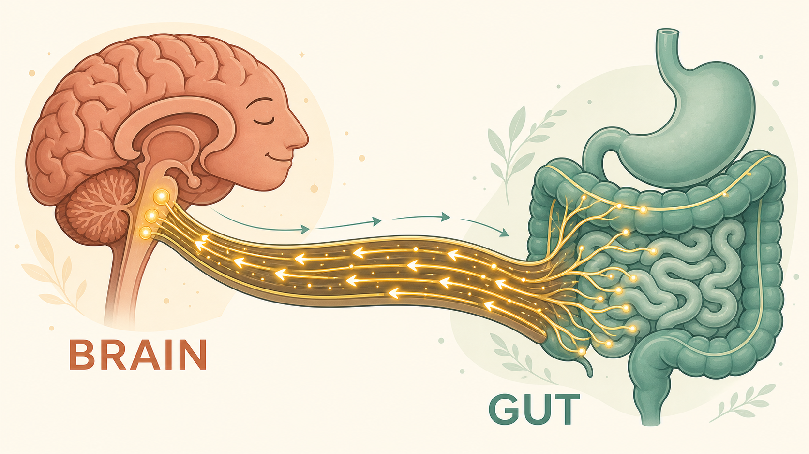
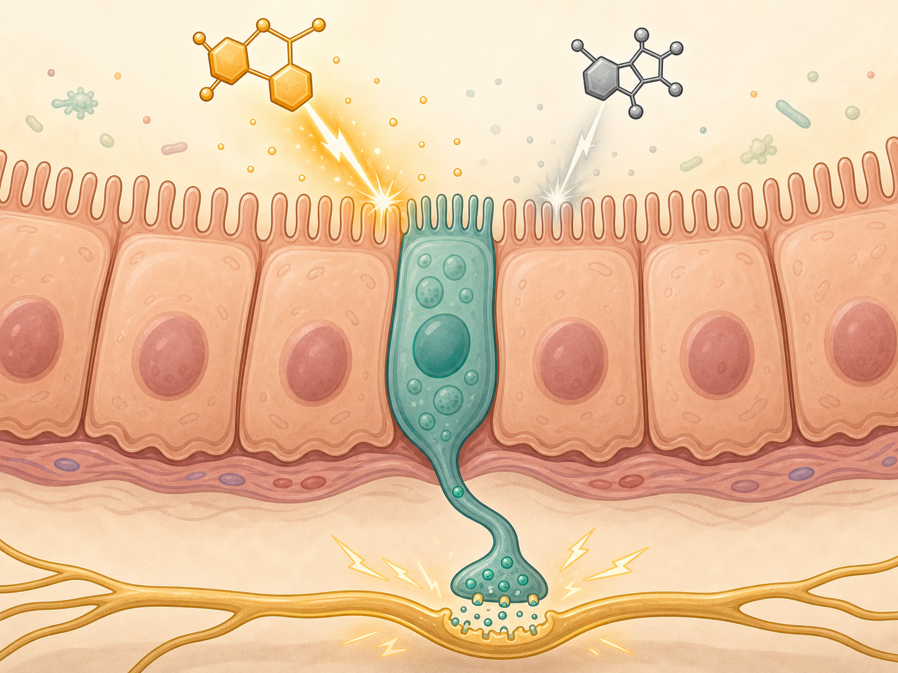
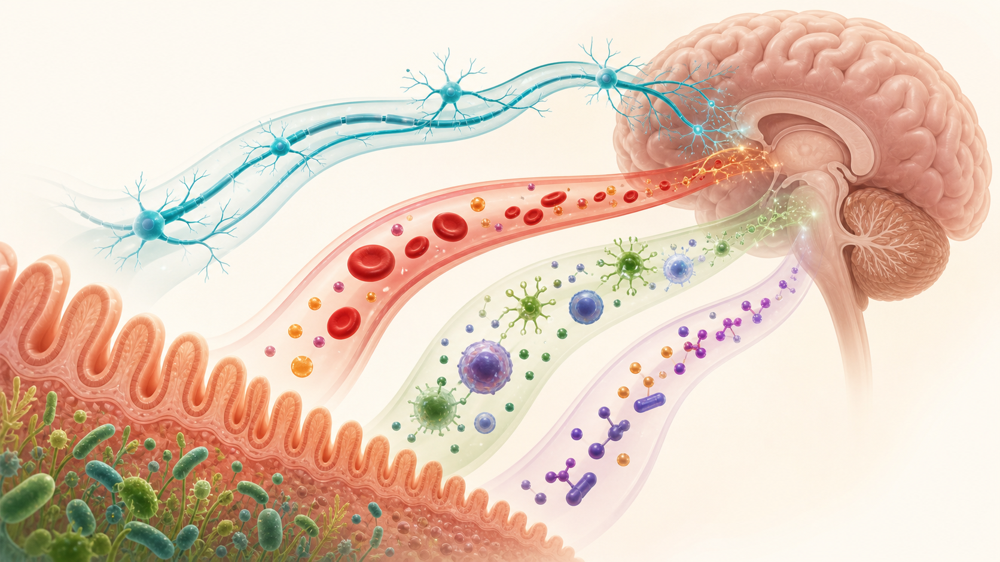
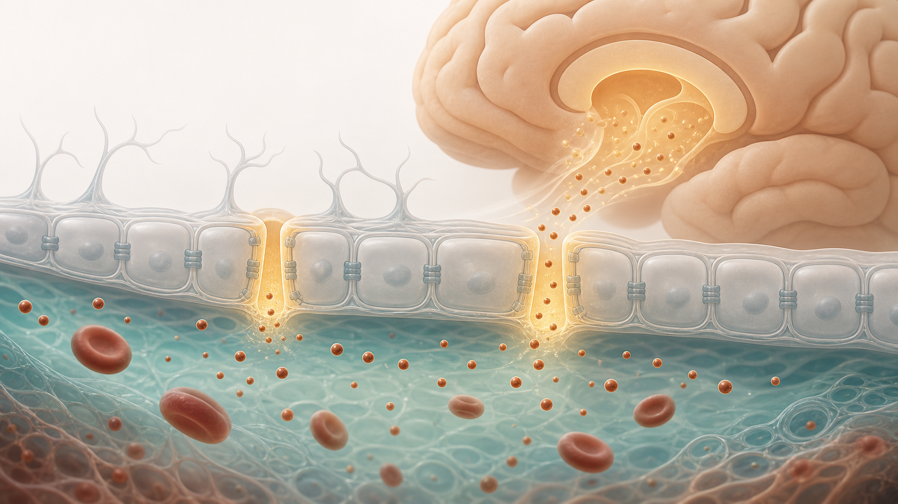
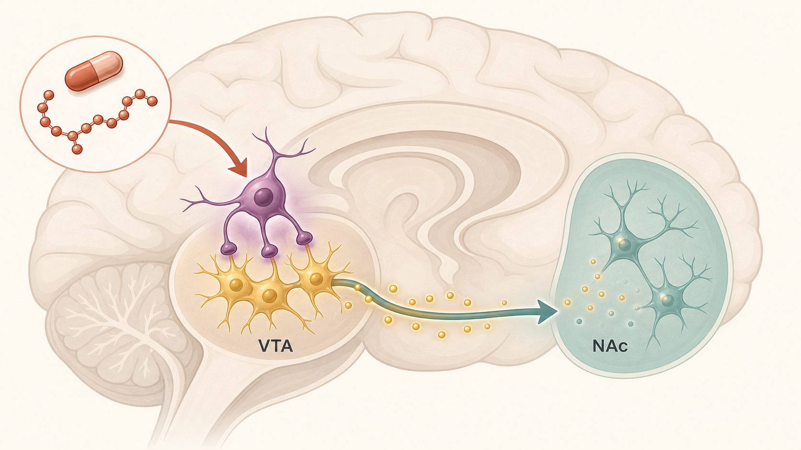

How the bag of microbes in your belly is in constant, two-way conversation with your brain — shaping your mood, your cravings, your health, and (it turns out) even the choices you make.
Here's the idea in one sentence: your gut and your brain are wired together like two cities joined by a highway, a postal service, and a private phone line — all running at once, in both directions.
For most of history we thought of the gut as plumbing: food in, waste out. We now know it's one of the most heavily wired, chemically chatty organs in the body — and a huge fraction of that wiring is busy reporting upward to the brain, not taking orders from it. Add the ~38 trillion microbes living inside you, and you have a system that helps run your appetite, your stress response, your immune system, and your frame of mind.
This guide walks through it in four moves: the hardware (the wiring), the software (the chemical messages), what happens when it breaks, and the surprising punchline — how this system touches decision-making and the new GLP-1 drugs like Ozempic.
neurons in the gut — a "second brain" running on its own.
of your body's serotonin is made in the gut, not the brain.
microbes living in you — a chemical factory and a second organ.
Lining your gut wall is the enteric nervous system — roughly 200–600 million neurons, more than in your spinal cord. It can run digestion entirely on its own, without checking in with the brain. It uses the same chemical messengers your head-brain does (acetylcholine, serotonin, dopamine, GABA and 20+ others), which is why scientists nicknamed it the "second brain."
The main cable between gut and brain is the vagus nerve. Here's the surprise that flips everyone's intuition: about 80% of its fibers carry signals up from gut to brain, and only 20% carry commands down. In other words, your gut talks far more than it listens. It's a giant sensory organ constantly streaming a status report to your head.

For decades we assumed the gut talked to the brain slowly, by dribbling hormones into the bloodstream. Then researchers found that certain gut cells have a long tail — a neuropod — that reaches out and forms a direct synaptic connection with the vagus nerve, exactly like neurons wiring to each other in the brain.
The kicker: these cells can tell real sugar from artificial sweetener. Glucose triggers one fast electrical channel (a "this is real fuel" signal); non-nutritive sweeteners trigger a different, weaker one. That "real fuel" signal is what drives your brain's dopamine reward circuit to prefer actual sugar — part of why diet soda never quite satisfies the way the real thing does.

The wiring is only half the story. The other half is chemistry. Your gut microbes are a living chemical factory, turning the fiber and protein you eat into molecules that act like messages. There are four main "channels," running in parallel.
Bacteria ferment dietary fiber into short-chain fatty acids (butyrate, propionate, acetate) that calm inflammation, feed the brain, and keep the blood–brain barrier sealed. They also reshape tryptophan into either calming or irritating molecules — and some microbes make neurotransmitters (GABA, dopamine, serotonin) outright.
When the brain perceives stress, it floods the gut with stress hormones that loosen the gut lining and unsettle the microbes. Chronic stress becomes a vicious loop: stress → leaky, inflamed gut → more stress signals back to the brain.
The vagus nerve can actively dial down inflammation through the "cholinergic anti-inflammatory pathway" — telling immune cells to stop releasing inflammatory signals. People with low vagal tone tend toward more inflammation.
A healthy gut lining is a tight wall. When the wrong microbes take over, bits of bacteria slip into the bloodstream, trip the immune alarm, and send inflammation toward the brain. Gut microbes even tutor the brain's own immune cells (microglia) as they mature.
The illustration below is a recreation of the classic "microbiome–gut–brain axis" map: on the left, all the things that shape which microbes you carry; in the middle, the channels they use to reach the brain; on the right, the actual chemical keys they make.

A famous experiment (Bravo et al., 2011): feeding mice a single probiotic strain changed calming GABA receptors across their brains and made them act less anxious — but the effect vanished if the vagus nerve was cut. That cut-the-wire result is the cleanest proof that microbes reach the brain through the vagus.
If gut and brain are this tightly linked, then trouble on one end shows up on the other. This plays out across a striking range of conditions — from belly to brain.
This is the most dramatic example of the axis running in reverse. The protein clumps that define Parkinson's disease show up in the gut's nerves years before the brain — and constipation often precedes the tremor by a decade. The "body-first" hypothesis says the disease can begin in the gut and crawl up the vagus nerve into the brain, prion-style.
Two lines of evidence are hard to ignore. In mice, injecting the rogue protein into the gut wall sent it marching up to the brain in sequence — unless the vagus was cut first, which blocked it. And in huge Swedish and Danish registries, people who'd had their vagus nerve surgically cut decades earlier had a ~40–47% lower risk of Parkinson's. Cut the wire, slow the spread.
Here's a clinical pattern that surprises people: many of the conditions that cluster with IBS aren't in the gut at all. Because the gut–brain axis is a shared crossroads — nerves, hormones, immune signals and metabolism — one underlying problem can surface as pain, fatigue, mood, bladder, pelvic, or even heart-rate symptoms. Often it's one process wearing many specialist labels.
The same person can be sent to a gastroenterologist, a rheumatologist, a urologist and a gynaecologist — and collect four different labels for what may be one shared problem.
Because the trouble runs along the axis, so does the fix. IBS is treated in steps, each targeting a part of the gut–brain system:
Diet (the low-FODMAP plan), regular meals, fiber, and good information. Often enough on its own — low-FODMAP helps ~57%.
A low-dose antidepressant or talking therapy (CBT, gut-directed hypnotherapy) — not for sadness, but to quiet over-sensitive gut nerves. Hypnotherapy helps up to 80% of tough cases.
Specific drugs for constipation- or diarrhea-type IBS, and newer options (mast-cell drugs, even GLP-1 drugs) for the hardest cases.
The thing to notice: an "antidepressant" used for belly pain, and hypnosis used as real medicine — because the target is the gut–brain conversation itself.
Here's where it gets philosophically weird — and irresistible to anyone interested in behavioral economics. If gut microbes feed into the brain's reward and emotion circuits, could they nudge the choices you make?
In 2022, a placebo-controlled trial did the experiment. Healthy volunteers took either a probiotic or a placebo for 28 days, then played economic games for real money. The probiotic group became less risk-taking and more patient — more willing to wait for a bigger later reward instead of grabbing a smaller one now.
Sit with that: two of the most "fixed" assumptions in economics — how much risk you'll take and how patient you are — shifted because of a change in gut bacteria. Preferences we treat as part of someone's personality may be partly biological, and partly editable from the gut up. (As we'll see, the GLP-1 drugs poke the very same reward circuit.)
Probiotic group took fewer risky gambles than placebo.
Probiotic group chose more future-oriented, patient options.
GLP-1 is one of those gut hormones — released by gut cells after you eat, it tells your brain you're full. The blockbuster drugs semaglutide (Ozempic/Wegovy) and relatives are lab-made copies of it. They were built to manage diabetes and weight, but they turn out to be a master key into the gut–brain reward system.
The trick is that the natural hormone and the drug behave nothing alike. Your own GLP-1 lasts about 1–2 minutes before it's destroyed, and mostly whispers to the local vagus nerve. The drug lasts about 5–7 days and reaches the brain directly. (This table is a recreation of the OpenEvidence comparison.)
| Feature | Your own GLP-1 | The drug (semaglutide) |
|---|---|---|
| Half-life | 1–2 minutes | ~5–7 days |
| Main mechanism | Whispers to nearby vagus nerve | Travels in blood + reaches brain directly |
| How it enters the brain | Via vagus & brainstem neurons | Through "leaky-by-design" brain windows (CVOs) |
| Needs the vagus nerve? | Yes, for its quick effects | No — works without it long-term |
| Brain regions reached | Mostly local brainstem | Brainstem, hypothalamus, reward & emotion centers |
| Blood levels | Small bump after a meal | Steady, far above natural levels |
The brain is normally sealed off by the blood–brain barrier. Semaglutide barely crosses it. Instead it slips in through a few special spots — the circumventricular organs — where the barrier is deliberately leaky so the brain can sample the blood. From those windows it reaches appetite and reward centers and parks there for days.

This is the heart of the matter. In the brain's reward hub, GLP-1 receptors sit mostly on the brakes (GABA neurons). When the drug presses those brakes, dopamine release drops — and so does the pull of whatever you were craving, whether that's cake, alcohol, or nicotine.

In the first proper trials, semaglutide cut heavy-drinking days and craving — performing better than today's approved alcohol medications in real-world data. This is the most exciting addiction finding in years.
Large datasets link GLP-1 drugs to lower use of nicotine, cocaine, opioids and cannabis. Early, mostly observational — but consistent.
Mixed but leaning positive. A large Swedish study tied semaglutide to 42% lower risk of worsening mental illness. Trials show small mood benefits.
Big hopes for Parkinson's and Alzheimer's. But the definitive Parkinson's trial in 2025 was negative, and an Alzheimer's trial missed its mark. A cautionary tale.
Remember the probiotic study that made people more patient? In 2026, a trial found semaglutide changed effort-based decision-making in people with depression: they became more willing to work for a reward — and crucially, this happened independently of whether their mood improved. A gut-hormone drug measurably shifted a decision-making parameter. The microbiome → gut-hormone → reward pathway looks like a real, biological lever on human choice.
The gut runs ~500M neurons and makes most of your serotonin. It talks to your head constantly — mostly upward.
Fiber → calming fatty acids; the right bugs make neurotransmitters. What you eat tunes the chemistry that reaches your brain.
From IBS to depression to Parkinson's, gut and brain rise and fall together — sometimes the gut leads.
Probiotics and GLP-1 drugs both nudge the reward circuit — shifting risk, patience, craving, and effort.
The evidence is young, but the low-risk levers point the same way: eat fiber and fermented foods (feed the good bugs), lean Mediterranean (the one diet with trial evidence for mood), manage stress and sleep (the stress line is real), and move your body. None of this is a magic cure — but it's the same advice that keeps showing up, now with a mechanism behind it.
This page is the visual tour and the front door. When you want the full depth, the studies, or something to present or hand out, everything below lives in the same folder.
Full technical depth with plain-language explainers, teaching analogies, and click-to-reveal self-quiz. Your learn-it-then-teach-it textbook.
open in browserThe complete reference — every mechanism, trial, and effect size, with citation markers. For when someone pushes back.
open in browserPresentable-with-depth PowerPoint to talk through with the family. Room for your own speaker notes.
PowerPointA 23-page in-depth PDF to print or share — the whole story in one document.
PDF